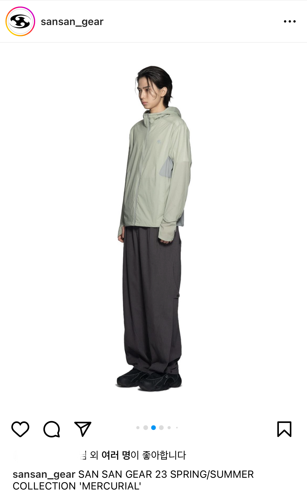
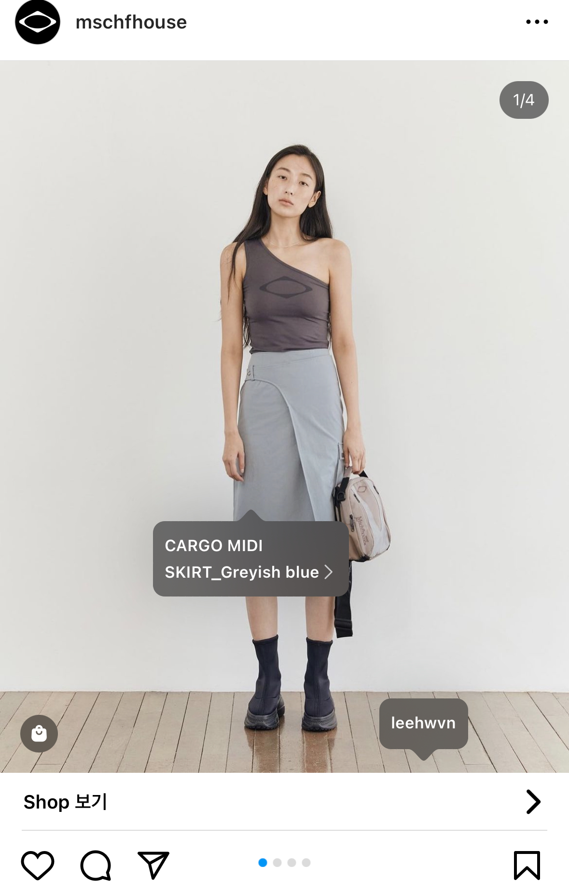

자기소개
이메일: banna5282@naver.com
전화번호:010-2260-1336
인스타그램:@meyooningg

안녕하세요 저는 호서대학교를 재학중인 디지털기술경영학과 학생인 김나윤입니다.
저는 웹프로그래밍과 디지털콘텐츠에 관심이 많으며 열심히 공부하고 있습니다.
이번 웹프로그래밍 전공수업을 배우면서 HTML 코딩을 해보니 유익하고 재밌는 수업이라는 것을 느꼈습니다.
현재 저는 컴퓨터활용능력 자격증을 취득하려고 공부중입니다.
제 진로는 패션 유통MD여서 향후 마케팅,유통 쪽으로 갈 생각입니다.
관심사
요즘 제 관심사는 스트릿브랜드 쇼핑몰을 구경하고 뭐가 트렌드인지 찾아보는 것입니다.
보통 저는 쉴때 쇼핑몰의 홍보,광고영상이나 신상출시 옷들을 구경합니다.
 
경력
봉사
용인시육아종합지원센터 장난감도서관서 8시간